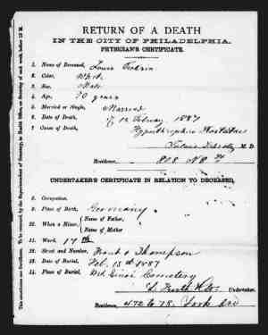

 FROHSIN, Louis (1814-1887) |
FROHSIN, Louis
Louis married First Wife UNKNOWN about 1831 in Würzberg, , Hessen, Germany. Louis next married Second Wife (Rebecca) UNKNOWN. Louis next married Helene "Lena" NEUSTADT, daughter of Samuel NEUSTADT and Unknown UNKNOWN, on 22 May 1864 in Philadelphia, Philadelphia, Pennsylvania, USA. (Helene "Lena" NEUSTADT was born in 1835 in Amelunxen, Amelunxen, , Nordrhein-Westfalen, Germany, died on 1 April 1899 in Kalamazoo, Kalamazoo, Michigan, USA and was buried in April 1899 in Frankford, Philadelphia, Pennsylvania, USA, Mt. Sinai Cemetery.) |

Table of Contents | Surnames | Name List
This Web Site was Created 19 August 2013 with Legacy 7.5 from Millennia